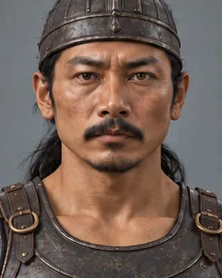

1546–1547
চিলাৰায়
1510–1571 · Koch general

Third son of Biswa Singha and commander-in-chief under Nara Narayan. Led the 1562–63 invasion that forced the Treaty of Majuli; died of smallpox in 1571.
Spouse: Kamalpriya. Sleeveless breastplate, compact helmet and pleated wrapped riding cloth follow the visible silhouette; colors, materials, footwear and rear details are inferred. Existing face retained. Current version: turnaround-1.webp.
Record confidence: high.